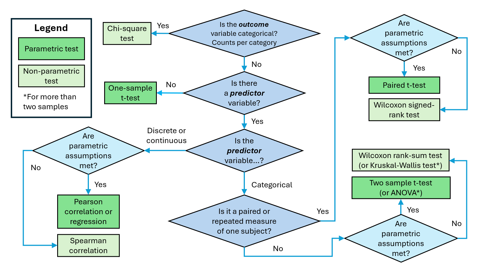

25 Q2: Wilcoxon rank sum Test
Research Question:
Are insects more attracted by white or yellow flowers?
We are going to be looking at a dataset collected during the Doñana field course to Spain. Students wanted to find out whether or not flower colour influenced their popularity with insects, and compared the numbering of insects landing on flowers of different colours (white and yellow). We are going to determine whether or not there is a significant difference between the colours.
Questions:
Looking at the research question and the data:
- What do you think the outcome variable is?
- What kind of variable is it (e.g. categorical, discrete, continuous)?
- What do you think the predictor variable is?
- What kind of variable is it (e.g. categorical, continuous)?
Looking at The Flow Chart™:
- How far could you navigate through The Flow Chart™ based on your answers above?
- Can you get all the way to a test? Why or why not?

25.1 Check assumptions and prepare the data
The Wilcoxon rank-sum test doesn’t make any assumptions about the distribution of the data or about the variances. However:
- the two samples should have distributions with similar shapes (e.g. it is not suitable if one data set is positively skewed and the other is negatively skewed for example).
Visualise the data by making histograms and boxplots for each flower colour separately.
You will need to subset the data by colour first.
Questions:
Based on your histograms and boxplots:
- What do the two distributions look like?
- Do the white and yellow flower data look like they come from similar distributions?
We could try transforming the data set, but because there are a lot of “zero” values, this could be tricky. In addition, it is a small data set, so a non-parametric test would be safer.
25.2 Hypotheses
Next, we write down our null and alternative hypotheses.
\(\mathrm{H}_0\): The median “insects per flower” is not significantly different for white and yellow flowers.
\(\mathrm{H}_\mathrm{A}\): The median “insects per flower” is significantly different for white and yellow flowers.
25.3 Wilcoxon rank sum test
As mentioned in the previous section, R uses the function wilcox.test() for both Wilcoxon tests.
For both tests, you need to provide both sets of data as the first two arguments. Additionally, for both tests you also need to provide:
- the argument exact = FALSE (which tells it to do something called a “continuity correction”)
Because we are omitting the paired = TRUE argument, R will do the rank sum test for unpaired data instead of the signed rank test for paired data.
Use the code below, replacing the names of the data frames and variable as appropriate for the specific data.
# Wilcoxon rank-sum test for unpaired data
wilcox.test(df1$var,
df2$var, exact = FALSE)Question:
Based on your Wilcoxon rank sum test results:
- Is P < 0.05?
- Should you reject or accept the null hypothesis?
Write down a formal sentence describing the outcome of the test as a comment in your script.
You sentence should include:
- the overall result of the research question (i.e. are the two groups different?)
- the median number of insects per flower for both colours of flower
- the test statistic, W (sometimes also called U)
- the p-value
The last two quantities are usually provided in brackets at the end of the sentence.
Information
The Wilcoxon rank-sum test is sometimes called the Mann-Whitney U-test in other statistical software.
Although the two tests use slightly different test statistics, both provide the same p-value and the test statistics can be calculated from each other using the equation below:
- W is the sum of all ranks
- \(U=W−\frac{n(n+1)}{2}\)